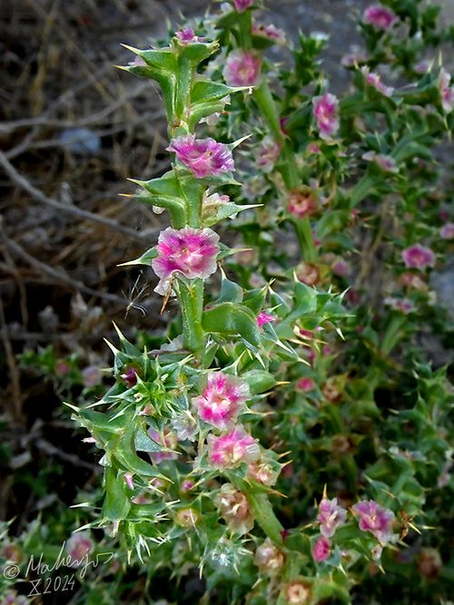

Ayuntamiento de Senés
JARDIN BOTANICO DE ESPECIES AUTOCTONAS DE SENES

Salsola kali

La barrilla pinchosa (Salsola kali) es una planta herbácea anual característica de ambientes áridos y salinos del ámbito mediterráneo. Se distingue por su aspecto espinoso y su forma redondeada, especialmente cuando alcanza su desarrollo completo.
Presenta tallos muy ramificados y rígidos, con hojas pequeñas, carnosas y terminadas en punta, adaptadas a reducir la pérdida de agua. Con el tiempo, la planta adquiere una forma esférica que facilita su dispersión por el viento.
La barrilla pinchosa se distribuye por zonas costeras y regiones áridas del Mediterráneo, donde crece en suelos arenosos, salinos y bien drenados. Es frecuente en dunas, terrenos degradados y áreas expuestas.
Aunque menos común en zonas de interior, puede aparecer en terrenos secos y pobres, formando parte de la vegetación adaptada a condiciones extremas.
La barrilla ha tenido usos tradicionales relacionados con la obtención de cenizas ricas en sales, utilizadas antiguamente en la fabricación de vidrio y jabón.
No destaca por propiedades medicinales relevantes, pero sí por su importancia histórica en usos industriales tradicionales.
La barrilla pinchosa simboliza la resistencia y la adaptación extrema, al ser capaz de desarrollarse en ambientes salinos y secos donde pocas especies prosperan.
Su forma rodante también la asocia con el movimiento y la dispersión natural.
En Senés, se utilizaba al ser una planta jabonosa como jabón para lavar las ropas de las faenas agrícolas.
No se le conoce propiedades medicinales..
Florece durante el verano, aunque sus flores son poco visibles y pasan desapercibidas frente a la estructura de la planta.
Cuando la planta se seca, puede desprenderse del suelo y rodar impulsada por el viento, facilitando la dispersión de sus semillas.
Este comportamiento la hace similar a las plantas rodadoras típicas de zonas áridas.